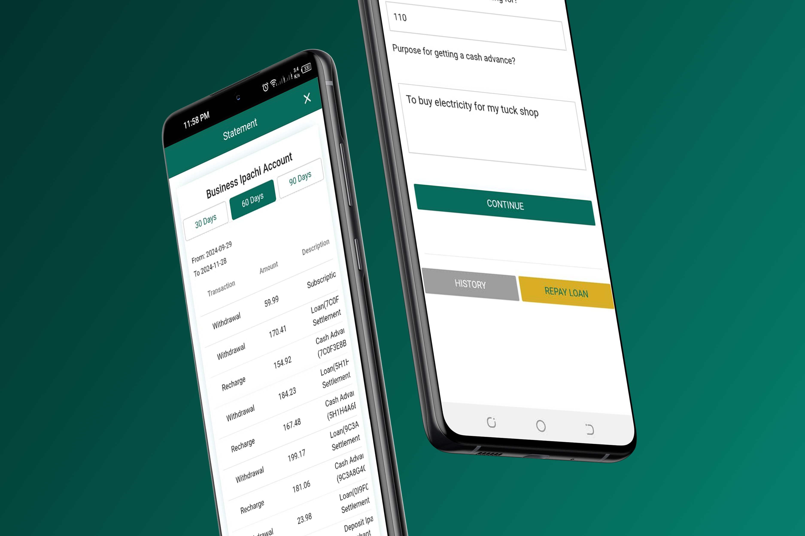

Ipachi Capital — end-to-end customer experience and internal operations redesign.

Ipachi Capital had a functional product with a real customer base, but the experience was fragmented. Borrowers dropped out partway through applications, support queues stayed long, and staff couldn't easily see where loans sat across the credit pipeline.
The work wasn't a rebuild — the underlying operations were sound. It was a redesign focused on reducing friction at the points where customers and staff were already losing time.
I redesigned onboarding and application flows for borrowers — reducing the number of steps, surfacing required documents earlier, and letting customers save and resume applications rather than starting over.
On the staff side, I rebuilt the internal credit-stage view so decisions could move through the pipeline with clarity. Loan officers could see at a glance where each application was stuck, what was needed to move it forward, and which loans were approaching SLA breaches.
The principle across both halves of the redesign was simple: surface the right information at the right moment. Customers didn't need to see internal credit logic; staff didn't need to wade through borrower-facing copy. Each audience got the view they needed.